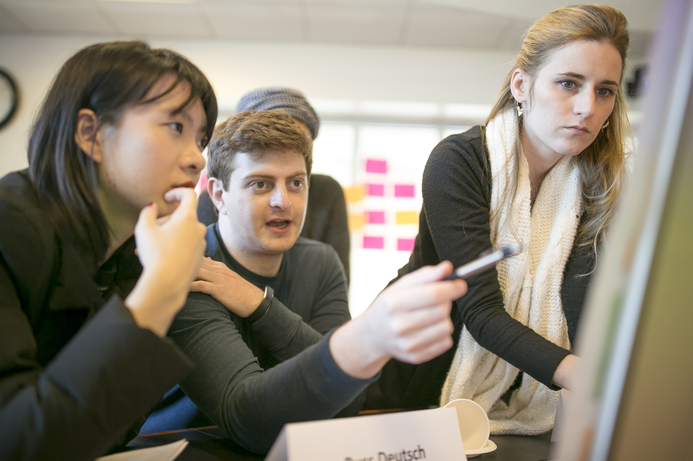

Building Next Generation Learning at Duke

In a time with transformational technological advances, the rapid obsolescence of knowledge beckons innovation in education. Over the course of two semesters, our project team of seven Duke undergraduates, led by Aria and Kevin, co-founders of Open Design Studio, applied the theory of open design to inform education innovation at Duke. More specifically, we conducted in-depth interviews, surveys studies, and prototyped ideas. This helped us gain a deep understanding of the lived experiences of Duke students, faculty, and administrators, as well as the perspectives of education leaders. Having analyzed findings from our research, we then ideated and tested solutions, iterating quickly and reflecting incisively. As Duke University revamps the curriculum for Trinity College of the Arts and Sciences, our project stands out as one of the few organized initiatives to provide insights on both student and faculty needs, bridging the gap between key stakeholder groups in the education system.
Timeline Highlight Tools Skills
You can find details about our project here.
Overview
August 2023 - Present
and formulated 3 detailed concept pitches